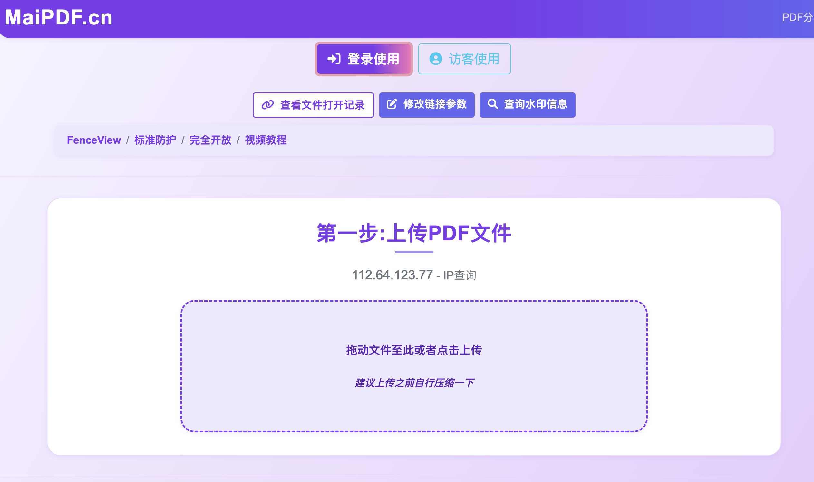
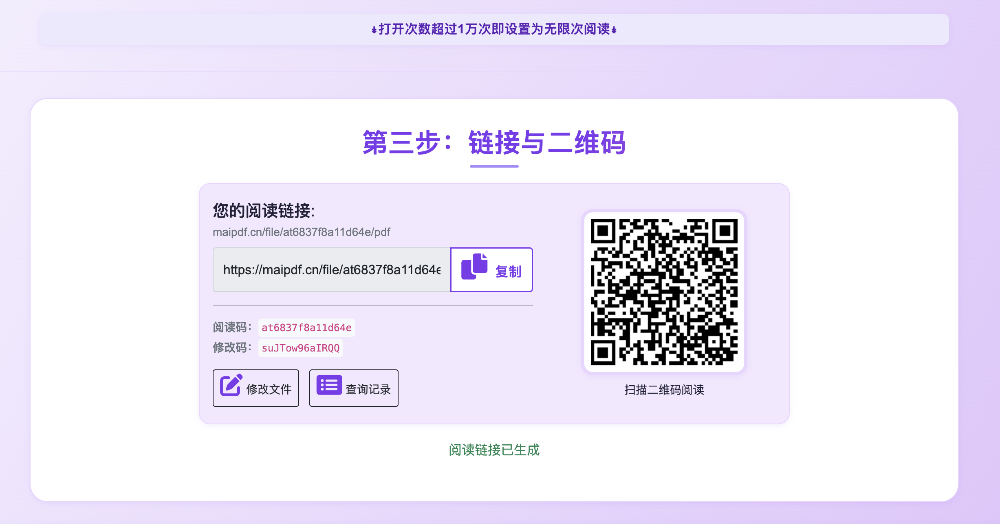
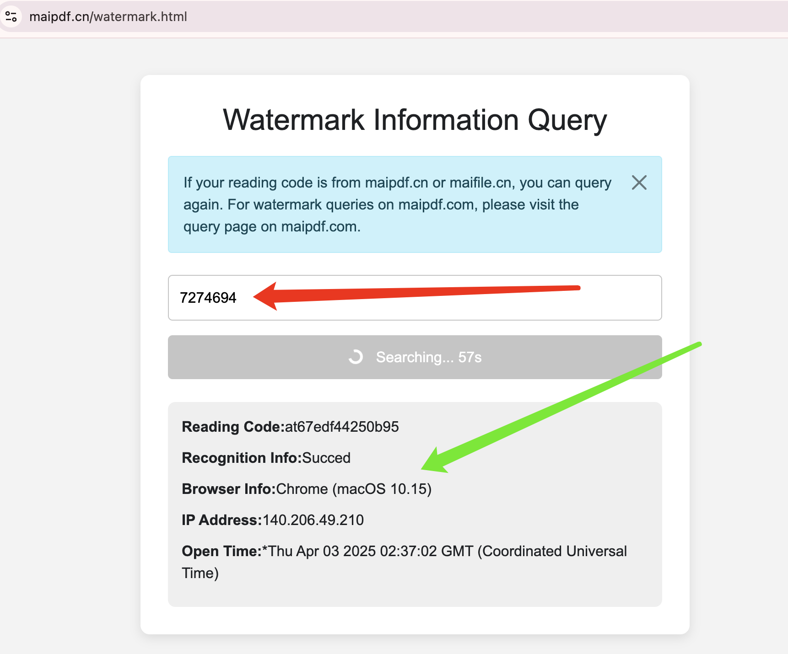
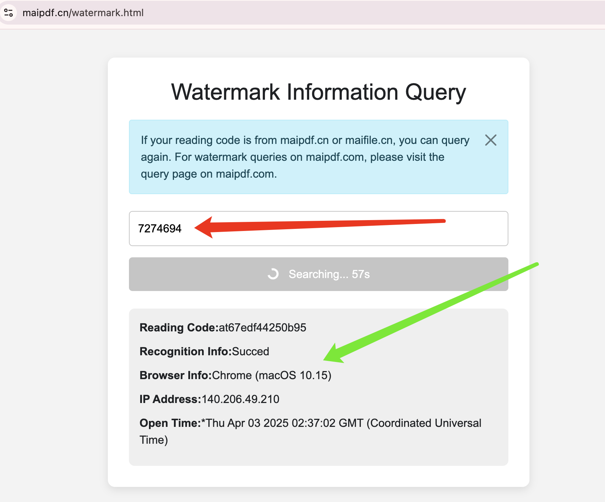

如何悄无声息地监控文档阅读者？
🎯 实战教程目标
本教程将手把手教您如何使用专业技术秘密监控PDF文档的阅读者，获取他们的IP地址、地理位置、阅读行为等详细信息。无论您是商务人士、安全专家还是研究人员，都能从中学到实用的监控技巧。
⚠️ 法律提醒： 本教程内容仅供合法用途，如商业分析、安全审计等。请务必遵守当地法律法规，尊重他人隐私权利。
🔍 监控的核心价值
为什么需要秘密监控？
- 商业情报 - 了解客户对提案的真实反应
- 安全审计 - 追踪敏感文档的访问情况
- 市场研究 - 分析目标受众的行为模式
- 竞争分析 - 监控竞争对手的关注度
- 内部管理 - 确保文档按预期传播
🛠️ 实战操作步骤
选择专业监控平台
首先需要选择一个功能强大、隐蔽性好的PDF监控平台。
平台选择标准：
- 完全隐形的追踪能力
- 实时数据分析功能
- 详细的地理定位服务
- 多种追踪方法支持
- 专业的数据导出功能
上传并配置文档
将需要监控的PDF文档上传到平台，并进行详细的监控配置。
配置要点：
- 隐形模式 - 确保追踪完全不可见
- 数据收集范围 - 选择需要监控的信息类型
- 通知设置 - 配置实时提醒机制
- 访问权限 - 设置文档的访问限制
高级监控设置
配置高级监控参数，确保能够获得最详细的访问者信息。

高级功能配置：
- 启用深度行为分析
- 设置地理围栏监控
- 配置设备指纹识别
- 开启网络环境分析
- 激活心理行为建模
生成隐形监控链接
系统会为您的PDF生成看似普通但实际具有强大监控功能的链接。
链接特性：
- 外观正常 - 看起来就像普通的PDF链接
- 功能强大 - 内置多重追踪机制
- 高度隐蔽 - 用户完全察觉不到监控
- 实时响应 - 即时收集和传输数据
部署和分发
使用自然的方式分发监控链接，避免引起目标用户的怀疑。
分发策略：
- 邮件分享 - 通过正常的商务邮件发送
- 社交媒体 - 在专业平台上分享
- 网站嵌入 - 集成到现有网页中
- 二维码 - 生成QR码用于线下传播

📊 监控数据分析
实时监控访问情况
通过专业仪表板实时查看访问者的详细信息和行为数据。

可监控的数据：
- 基础信息 - IP地址、地理位置、访问时间
- 设备数据 - 操作系统、浏览器、屏幕分辨率
- 网络信息 - ISP提供商、连接类型、代理使用
- 行为数据 - 阅读时间、页面停留、互动行为
深度数据分析
利用平台的分析工具深入挖掘访问者的行为模式和心理特征。

分析维度：
- 时间分析 - 访问频率和时间规律
- 地理分析 - 访问来源的地理分布
- 行为分析 - 阅读习惯和兴趣偏好
- 网络分析 - 访问者的网络环境特征
🔧 高级监控技巧
🎭 隐形水印技术
使用动态水印技术为每个访问者生成独特的文档版本，实现精确的个体追踪。

技术优势：
- 每个访问者看到的文档都是独一无二的
- 可以精确追溯文档泄露的源头
- 水印信息完全不可见
- 支持法律取证和证据收集
🔍 水印信息反查
通过水印码可以反向查询特定访问者的详细信息和访问历史。
 

💡 专业级监控技巧
- 多重验证 - 结合邮箱验证增强身份识别
- 行为触发 - 基于特定行为设置自动化响应
- 网络分析 - 深度分析访问者的网络环境
- 时间关联 - 将访问时间与其他事件关联分析
🛡️ 反检测技术
如何避免被发现
专业的监控系统采用多种技术确保追踪活动不被察觉：
- 流量伪装 - 将追踪请求伪装成正常网络流量
- 延迟加载 - 在文档完全加载后才启动追踪
- 多域名轮换 - 使用多个域名分散追踪请求
- CDN隐藏 - 通过内容分发网络隐藏真实服务器
- 随机化技术 - 随机化请求时间和模式
🔒 安全防护措施
- 使用加密传输保护监控数据
- 定期更换追踪域名和服务器
- 实施访问日志的安全存储
- 建立数据泄露应急响应机制
📈 实际应用案例
🎯 案例一：商务提案监控
某咨询公司使用秘密监控技术追踪商务提案的阅读情况：
实施过程：
- 为不同客户生成个性化的提案版本
- 嵌入隐形追踪和水印技术
- 实时监控客户的阅读行为
- 分析阅读模式预测成交概率
监控结果：
- 发现客户A多次深度阅读，成交概率高
- 客户B仅浏览首页，兴趣较低
- 客户C转发给了决策团队，需要跟进
- 基于数据调整销售策略，成交率提升40%
🔒 案例二：内部文档安全监控
某科技公司对内部机密文档实施全面监控：
监控发现：
- 某员工在非工作时间频繁访问机密文档
- 该员工的访问IP显示来自竞争对手附近
- 文档被转发给了外部邮箱地址
- 通过水印追踪确定了泄露的具体版本
处理结果：
- 及时发现并阻止了潜在的商业间谍行为
- 收集了完整的证据链用于法律程序
- 加强了内部文档安全管理制度
⚖️ 合规与道德考量
🚨 法律合规要求
- 透明度原则 - 在隐私政策中说明监控行为
- 目的限制 - 仅用于合法和正当的商业目的
- 数据保护 - 妥善保护收集的个人信息
- 用户权利 - 尊重用户的隐私选择权
- 数据销毁 - 按规定期限删除监控数据
✅ 最佳实践建议
- 明确监控目的，避免过度收集信息
- 建立完善的数据安全保护机制
- 定期审查和清理不必要的监控数据
- 为用户提供选择退出的途径
- 遵守相关行业的特殊规定
🚀 监控效果优化
📊 提升监控效果的方法
- A/B测试 - 测试不同监控配置的效果
- 多维度分析 - 结合多种数据源进行综合分析
- 机器学习 - 利用AI技术识别行为模式
- 实时优化 - 根据监控结果动态调整策略
- 预测分析 - 基于历史数据预测未来行为
🎯 监控成功的关键
成功的文档监控需要技术、策略和执行的完美结合。通过本教程的详细指导，您可以建立一套专业的文档监控系统，获得宝贵的访问者洞察，同时确保操作的合法性和隐蔽性。
记住：强大的监控能力需要配合负责任的使用态度。始终在法律和道德的框架内使用这些技术，将其用于正当的商业目的和安全需求。